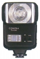

Contax TLA 280 闪光灯
二手性价比高，contax机身上支持TTL，其他机身上只能支持手动模式。色温准确，功能少了点，可调整的不多，尤其手动光强只有全功率、1/4、1/16三档，用手动模式很辛苦。
双灯，这个很少见； 色温准确； contax机身上支持TTL；
手动只有三档； 全功率回电有点慢。
用CONTAX机子,原厂灯选择余地不大,TLA360太贵,就只剩这TLA280了.看在价格的份上,也不能要求太多了.
子母灯设计,室内使用效果很好,有立体感,相比之下CNMP的灯却没有.GN.28一般够用了.侧面具有闪灯联线插孔,可再联一个灯,也具有TTL联动.
无闪光嚗光补偿功能!三触点,配和RX以来的五触点机身某些功能无法实现.主灯头高度稍低,变焦至85mm时指数应该更大些,且无法左右摇摆.外型有点难看.